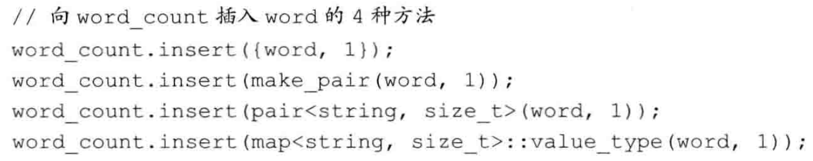

[TOC]
C++ 关联容器详解
关联容器概述
关联容器是C++标准库中的一类重要容器，它们将值与键关联起来，并通过键快速访问值。两个主要的关联容器类型是 map 和 set。
C++标准库提供了8种关联容器，它们之间的区别主要体现在三个方面：
- 容器类型：map（键值对）或 set（仅键）
- 键的唯一性：键可以重复（multi）或必须唯一
- 元素顺序：有序存储或无序（哈希表实现）存储
下表展示了8种关联容器的特点：

头文件和容器类型
有序容器：
map和multimap定义在<map>头文件中set和multiset定义在<set>头文件中
无序容器：
unordered_map和unordered_multimap定义在<unordered_map>头文件中unordered_set和unordered_multiset定义在<unordered_set>头文件中
1. 使用关联容器
所有关联容器都提供高效的关键字查询和访问操作。关联容器的迭代器都是双向迭代器，支持前向和后向遍历。
1.1 map 容器
map 是键值对（key-value pair）的集合，每个键对应一个值。
map<string, int> word_count; // 字符串到整数的映射
word_count["hello"] = 1; // 插入键值对 {"hello", 1}
map 类型通常被称为关联数组（associative array），与普通数组相比，其最大的不同在于下标（键）不必是整数，可以是任何能比较大小的类型。
1.2 set 容器
set 是关键字的简单集合，值就是键，每个键只能出现一次。
set<string> exclude = {"the", "but", "and", "or", "an", "a"};
if (exclude.find("the") != exclude.end())
cout << "Found 'the'" << endl; // 将会执行
当我们只需要知道一个值是否存在时，set 是最有用的容器类型。
1.3 multi 容器
带有 multi 前缀的关联容器（multimap, multiset）允许多个元素具有相同的键。
// 允许一个作者有多本书
multimap<string, string> authors; // 作者到书名的映射
authors.insert({"Tolkien", "The Hobbit"});
authors.insert({"Tolkien", "The Lord of the Rings"}); // 同一作者的另一本书
// 允许集合中有重复元素
multiset<int> nums = {1, 3, 5, 7, 1, 3, 1}; // 包含多个1和3
cout << "Count of 1: " << nums.count(1) << endl; // 输出：Count of 1: 3
对于普通的 set 和 map，插入重复键的元素不会产生任何效果，而 multiset 和 multimap 则会存储所有具有相同键的多个元素。
2. 关键字类型的要求
关联容器中的关键字必须能够比较大小，以便容器能对元素进行排序和查找。
默认排序准则
默认情况下，标准库使用关键字类型的 < 运算符进行比较。这意味着：
- 关键字类型必须定义
<运算符 - 或者，必须提供自定义的比较函数
自定义排序准则
如果要使用自定义的比较方式，可以在模板参数中提供一个函数类型：
// 使用自定义的比较函数
bool compareLength(const string &a, const string &b) {
return a.size() < b.size(); // 按字符串长度比较
}
// 需要在类型后指定比较函数类型
map<string, int, decltype(compareLength)*> word_count(compareLength);
自定义的比较函数必须满足严格弱序（strict weak ordering）的要求，确保能够正确排序元素。
3. pair 类型
pair 是一个简单的模板类，用于将两个值组合在一起：
- 定义在头文件
<utility>中 - 是一个模板：
pair<T1, T2> - 数据成员是
public的，分别为first和second
pair 的操作

创建和使用pair
// 几种创建pair的方式
pair<string, int> word_count1; // 默认构造
pair<string, int> word_count2("hello", 1); // 提供两个值构造
pair<string, int> word_count3 = {"world", 2}; // 列表初始化
auto p = make_pair("C++", 3); // 自动推断类型
// 访问pair成员
cout << p.first << ": " << p.second << endl; // 输出：C++: 3
4. 关联容器操作
关联容器除了支持普通容器操作外，还提供了特定于关联容器的操作，如按键查找等。

使用作用域运算符(::)可以访问容器的类型成员，例如 map<string, int>::key_type 表示 map 的键类型。
5. 关联容器迭代器
关联容器的迭代器有一些特殊性质，了解这些特性对于正确使用它们非常重要。
5.1 解引用关联容器迭代器
当我们解引用一个关联容器的迭代器时，得到的是一个 value_type 类型的值的引用：
map<string, int>::iterator it = word_count.begin();
// *it 是一个 pair<const string, int>& 类型
cout << it->first << ": " << it->second << endl;
对于 map，value_type 是 pair<const KeyType, ValueType>，第一个成员（键）是常量，不能被修改。
注意：map 的 value_type 是一个 pair，我们可以改变 pair 的值部分，但不能改变关键字部分。
5.2 set 的迭代器是常量迭代器
由于 set 中元素的值就是键，且键是常量，因此 set 的迭代器是常量迭代器，不能用来修改元素值：
set<int> iset = {1, 2, 3};
set<int>::iterator it = iset.begin();
// *it = 42; // 错误：set的元素是const的，不能修改
5.3 遍历关联容器
可以使用 begin() 和 end() 操作，以及范围for循环来遍历关联容器：
map<string, int> word_count = {{"hello", 1}, {"world", 2}};
// 使用迭代器
for (auto it = word_count.begin(); it != word_count.end(); ++it) {
cout << it->first << ": " << it->second << endl;
}
// 使用范围for循环
for (const auto& pair : word_count) {
cout << pair.first << ": " << pair.second << endl;
}
5.4 关联容器和泛型算法
通常不对关联容器使用泛型算法，原因有两个：
关键字是常量：关联容器的关键字是
const的，这意味着算法无法修改set的元素和map元素（pair）的第一个成员，因此不能用于修改或重排容器元素的算法。查找效率：关联容器提供的查找算法通常比泛型算法快得多，因为它们利用了关联容器的内部结构。
在实际使用中，如果要对关联容器使用算法，通常有两种情况：
- 将关联容器作为输入源序列
- 将关联容器作为目标位置（通常需要使用插入迭代器）
6. 添加元素
向关联容器中添加元素通常使用 insert() 方法，可以插入一个元素或一个范围的元素。
6.1 pair的四种创建方式
向 map 添加元素时，我们需要创建键值对（pair）。C++提供了多种创建 pair 的方式：

6.2 insert和emplace操作
关联容器提供了多种插入元素的方法：

// 向map中插入元素的不同方式
map<string, int> word_count;
// 方式1：使用insert和value_type
word_count.insert(map<string, int>::value_type("hello", 1));
// 方式2：使用insert和pair
word_count.insert(pair<string, int>("world", 2));
// 方式3：使用insert和花括号列表初始化
word_count.insert({"C++", 3});
// 方式4：使用emplace直接构造
word_count.emplace("programming", 4);
// 插入范围
map<string, int> other_words = {{"book", 5}, {"pen", 6}};
word_count.insert(other_words.begin(), other_words.end());
6.3 检测插入操作的返回值
对于不允许重复键的容器（map、set），添加单一元素的 insert 和 emplace 返回一个pair：
pair<iterator, bool>
其中：
- 第一个成员是一个迭代器，指向具有给定键的元素
- 第二个成员是一个布尔值，如果插入成功则为true，如果键已存在则为false
// 检测插入是否成功
auto ret = word_count.insert({"hello", 1});
if (ret.second) {
cout << "插入成功" << endl;
} else {
cout << "元素已存在，插入失败" << endl;
cout << "已存在的值：" << ret.first->second << endl;
}
注意：对于允许重复键的容器（multimap、multiset），insert 仅返回指向新插入元素的迭代器，不返回布尔值，因为插入总是成功的。
7. 删除元素
从关联容器中删除元素通常使用 erase() 方法。
7.1 erase操作
关联容器支持三种形式的 erase 操作：
- 删除指定迭代器指向的元素
- 删除一个迭代器范围内的所有元素
- 删除所有匹配特定键的元素（关联容器特有）

map<string, int> word_count = {{"hello", 1}, {"world", 2}, {"C++", 3}};
// 通过迭代器删除
auto it = word_count.find("hello");
if (it != word_count.end())
word_count.erase(it); // 删除"hello"
// 通过键删除
size_t removed = word_count.erase("world"); // 返回值是1，表示删除了一个元素
// 删除一个范围
word_count.erase(word_count.begin(), word_count.end()); // 清空map
当使用键作为参数调用 erase 时，函数返回实际删除的元素数量。这对于 multimap 和 multiset 特别有用，可以知道有多少具有相同键的元素被删除了。
8. map的下标操作
map 类型提供了下标运算符([])和 at() 函数来直接访问与特定键关联的值。
8.1 下标操作和at函数
map<string, int> word_count;
// 使用下标操作 - 如果键不存在，会创建元素并进行值初始化
word_count["hello"] = 1; // 添加新元素
word_count["hello"]++; // 更新现有元素
// 使用at函数 - 如果键不存在，会抛出异常
try {
word_count.at("world")++; // 如果"world"不存在，抛出out_of_range异常
} catch (const out_of_range& e) {
cout << "键不存在: " << e.what() << endl;
}
8.2 下标运算符的特性

重要特性：
Set不支持下标操作，因为set的元素本身就是键，没有对应的值可以获取或修改。
下标运算符的自动插入行为：
使用下标运算符时，如果关键字不在map中，会自动创建一个新元素并插入到map中，关联值将进行值初始化（对于内置类型是0，对于类类型调用默认构造函数）。
下标运算符仅适用于非const map： 由于下标操作可能插入新元素，因此只能对非const的map使用下标运算符。
下标操作vs解引用：
- 下标操作返回
mapped_type对象（值类型） - 解引用迭代器返回
value_type对象（键值对）
- 下标操作返回
// 区别示例
map<string, int> word_count = {{"hello", 1}};
int& count1 = word_count["hello"]; // 下标返回值类型的引用
pair<const string, int>& pair1 = *word_count.find("hello"); // 解引用返回pair的引用
9. 访问元素
关联容器提供了多种访问元素的方法，包括查找特定元素和范围内的元素。

9.1 查找元素
在关联容器中，查找特定键的元素通常使用 find 函数：
map<string, int> word_count = {{"hello", 1}, {"world", 2}};
auto it = word_count.find("hello");
if (it != word_count.end())
cout << it->first << ": " << it->second << endl;
对map使用find而非下标操作：如果只是想检查一个键是否存在而不想修改容器，应该使用 find 而非下标操作。下标操作会在键不存在时插入新元素。
9.2 处理multimap或multiset中的元素
对于允许重复键的容器，需要特殊的技术来处理具有相同键的多个元素。
方法一：使用find和count
// 在multimap中查找特定作者的所有书籍
string search_item("Alain de Botton");
auto entries = authors.count(search_item); // 获取元素的数量
auto iter = authors.find(search_item); // 获取第一个匹配元素的迭代器
// 遍历所有匹配的元素
while (entries) {
cout << iter->second << endl; // 打印书名
++iter; // 移动到下一个元素
--entries; // 减少计数
}
方法二：使用lower_bound和upper_bound
lower_bound 返回指向第一个具有给定键的元素的迭代器，upper_bound 返回指向最后一个具有给定键之后位置的迭代器：
// 使用迭代器范围查找特定作者的所有书籍
for (auto beg = authors.lower_bound(search_item),
end = authors.upper_bound(search_item);
beg != end; ++beg) {
cout << beg->second << endl; // 打印书名
}
方法三：使用equal_range
equal_range 函数一次性返回一对迭代器，表示具有给定键的元素范围：
// equal_range返回表示范围的迭代器对
auto range = authors.equal_range(search_item);
for (auto it = range.first; it != range.second; ++it) {
cout << it->second << endl; // 打印书名
}
equal_range 返回一个 pair，其中 first 成员等价于 lower_bound 的返回值，second 成员等价于 upper_bound 的返回值。
10. 无序容器
C++11新增了四种无序关联容器（unordered_map、unordered_set、unordered_multimap和unordered_multiset），它们不是使用比较运算符来组织元素，而是使用哈希函数（hash function）和键类型的相等运算符（==）。
10.1 无序容器的基本原理
哈希组织：无序容器使用哈希技术来组织元素，相比于有序容器的树形结构，哈希表通常提供更好的平均查找性能。
基本操作：除了组织方式不同外，无序容器的大部分操作与有序容器相同。所有适用于有序容器的操作（如插入、删除、查找等）都可以用于对应的无序容器。
// 无序容器示例
unordered_map<string, int> word_count;
word_count["hello"] = 1;
word_count["world"] = 2;
// 查找操作与有序map相同
auto it = word_count.find("hello");
if (it != word_count.end())
cout << it->first << ": " << it->second << endl;
10.2 桶管理
无序容器在内部组织为一组桶（bucket），每个桶保存零个或多个元素：
哈希过程：
- 容器使用哈希函数将键转换为哈希值
- 哈希值决定元素应存储在哪个桶中
- 所有具有相同哈希值的元素都存储在同一个桶中
性能影响因素：
- 哈希函数的质量（避免冲突）
- 桶的数量（足够多以减少冲突）
- 桶的大小（每个桶中元素过多会降低查找性能）
无序容器提供了一组桶管理函数：

// 检查和管理桶
unordered_map<string, int> word_count;
// 填充容器...
// 显示容器状态
cout << "桶数量: " << word_count.bucket_count() << endl;
cout << "负载因子: " << word_count.load_factor() << endl;
// 重组容器
word_count.rehash(2 * word_count.bucket_count()); // 增加桶数量
10.3 自定义类型的要求
要将自定义类型用作无序容器的键，必须满足两个要求：
- 相等比较：必须定义
==运算符 - 哈希函数：必须提供计算哈希值的函数
// 为自定义类型提供哈希支持
struct Person {
string name;
int age;
bool operator==(const Person& p) const {
return name == p.name && age == p.age;
}
};
// 为Person类型定义哈希函数
namespace std {
template<>
struct hash<Person> {
size_t operator()(const Person& p) const {
return hash<string>()(p.name) ^ hash<int>()(p.age);
}
};
}
// 现在可以使用Person作为键了
unordered_map<Person, string> person_map;
标准库为所有内置类型（包括指针）和一些标准库类型（如string和智能指针）提供了哈希函数。
例如:
size_t hasher (const Sales_data &sd) {
return hash<string>() ( sd.isbn() );//hash<string>() 产生一个string的hash对象,调用()运算符来运算 sd.isbn() 的hash值.
// 推荐：避免不必要的构造或插入时，可以使用 C++17 的 try_emplace。
// try_emplace 只有在键不存在时才构造对应的 mapped_type，且不会发生额外的拷贝或移动。
// 例如：
// auto [it, inserted] = word_count.try_emplace("new_key", 42);
// if (inserted) cout << "Inserted new_key with value 42" << endl;
}
bool eqOp (const Sales_data &lhs, const Sales_data &rhs) {
return lhs.isbn() == rhs.isbn() ;
}
unordered_multiset<Sales_data, decltype(hasher)*, decltype(eqOp)*> bookStore (42, hasher, eqOp);//传递hash和==的函数指针